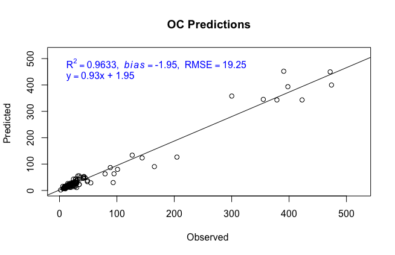

7 Model Performance
The following section describes the function getModResults() which coordinates the steps after your pls or mbl model is created:
Getting Predictions
Calculating Uncertainty
Generating Summary Statistics
Displaying Plots
This allows us to assess the performance of the model. How close are the predictions to the observed lab data? If you do not have lab data to compare your predictions to, you should simply use the functions getPredPLS() and getPredMBL()
Get Results
The following function returns the results for either pls or mbl models, calling upon getPredPLS() and getPredMBL() functions, then generates summary statistics and a plot of the predictions against the observations.
getModResults()
getModResults()PROP: string- The column name of the soil property of interest. Ex: “OC”MODTYPE: string- “MBL” or “PLS”MODNAME: string- The name of the model variable, if it is already loaded into the R environment. Use MODNAME or MODPATHMODPATH: string- The path the the RData file containing your model, if the model is not already loaded. Use MODNAME or MODPATHPREDNAME: string- The name of the prediction set variable, if it is already loaded into the R environment, that will be used to create the model. Use PREDNAME or PREDPATHPREDPATH: string- The path the the RData file containing your prediction set, if the prediction set is not already loaded. PREDNAME or PREDPATHSAVEPRED: boolean- Whether or not to save the predictions. If TRUE, predictions will be saved to the folder ‘Predictions’ using the functionsavePredictions(). Default is set to TRUEMODPERF: boolean- Whether or not to generate and show the prediction performance statistics. If TRUE, these statistics will be generated by thegetModStats()function, and saved in the folder ‘Predictions’ in the performance log.
getModResults <- function(PROP, MODTYPE, MODNAME=NA, MODPATH=NA, PREDNAME=NA, PREDPATH=NA, SAVEPRED=TRUE, MODPERF=TRUE){
# Load Model
if(!is.na(MODPATH)){
MODNAME <- load(MODPATH)
}
model <- get(MODNAME)
# Load Prediction Set
if(!is.na(PREDPATH)){
PREDNAME <- load(PREDPATH)
}
predSet <- get(PREDNAME)
# Extract Predictions
if(MODTYPE=="MBL"){
ncomp_onesigma <- NA
pred_type <- NA
predictions <- getPredMBL(model)
}
if(MODTYPE=="PLS"){
# Find Optimal Number of Components
ncomp_onesigma <- selectNcomp(model, method = "onesigma", plot=TRUE, main=PROP)
# Get Predictions
pred_type <- "predict"
predictions <- getPredPLS(model, ncomp_onesigma, pred_type , predSet)
}
# Get Pred Versus Observations
lab_data <- predSet[,PROP] # Lab Data
predobs <- data.frame(predSet[,"sample_id"], predictions, lab_data)
names(predobs) <- c("sample_id","pred","obs")
# {Optional} Model Performance
if(MODPERF==TRUE){
modstats <- getModStats(PREDOBS= predobs, PROP=PROP, NCOMP=ncomp_onesigma, MODNAME=MODNAME,
PREDTYPE= pred_type, PREDNAME=PREDNAME, SAVE=TRUE)
}
# {Optional} Save Predictions
if(SAVEPRED==TRUE){
savePredictions(predobs, PROP, MODTYPE, predSet, paste0(PREDNAME,"_predictions.csv"))
}
names(predobs) <- c("sample_id", paste0(PROP,".",MODTYPE), PROP)
return(predobs)
}Predictions
Predictions are extracting using either getPredPLS() or getPredMBL(). These are called within getModResults() before being saved. The following functions save predictions to a file unique to each prediction set. If this file already exists, it simply adds another column of predictions. If it does not, it will create the file to save predictions in from the original prediction set.
getSavePredTable()
getSavePredTable <- function(PREDSET, SAVENAME){
if(file.exists("./Predictions")==FALSE){dir.create("./Predictions")}
predSavePath <- paste0("./Predictions/", SAVENAME)
if(file.exists(predSavePath) ){
all_predictions <- read.csv(predSavePath)
}else{
all_predictions <- PREDSET[,-ncol(PREDSET)] # remove spectra, last column
}
return(all_predictions)
}savePredictions()
savePredictions <- function(PREDOBS, PROP, MODTYPE, PREDSET, SAVENAME){
all_predictions <- getSavePredTable(PREDSET, SAVENAME) # Make/Load file to save predictions
savename <- paste(PROP,MODTYPE,sep=".") # Ex: OC.PLSR column name
if(!(savename %in% names(all_predictions))){
all_predictions <- merge(all_predictions, PREDOBS[,1:2] , all.X=TRUE) # Merge with all_predictions
ncolm <- ncol(all_predictions)
names(all_predictions)[ncolm] <- savename
savefile <- paste0("Predictions/", SAVENAME) # Set file savename
write.csv(all_predictions, file=savefile, row.names=FALSE) # Save
cat(paste("\nPredictions saved to", savefile)) # Print save location
}else{
cat("\nPrediction column already exists")
}
View(all_predictions)
}Statistics
After making predictions using either of the modeling methods, various summary statistics can help test the accuracy of those predictions. The u-deviation, as a measure of uncertainty, can help assess how much each prediction can be trusted.
getModStats()
The getModStats function returns the following statistics in a dataframe:
- R2
- R2 adjusted
- Slope
- Y-Intercept
- RMSE
- Bias
- Standard deviation (of predictions)
- Residual prediction deviation
The minimum input is the PREDOBS table containing a column ‘pred’, containing the predictions and a column ‘obs’, its corresponding lab data. The remaining parameters are characteristics about the models and prediction runs that are important to include if you are saving the statistics.
getModStats <- function(PREDOBS, PROP=NA, NCOMP=NA, MODNAME=NA, PREDTYPE=NA, PREDNAME=NA, SAVE=FALSE){
print(paste(PROP, "Summary"))
TIME <- as.character(Sys.time()[1])
# Regress predicted versus observed
PREDOBS <- na.omit(PREDOBS)
reg_mod <- lm(PREDOBS$pred ~ PREDOBS$obs)
sum_perf <- summary(reg_mod)
# Get statistics
R2 <- round(sum_perf$r.squared,4)
R2_adj <- round(sum_perf$adj.r.squared,4)
b0 <- round(sum_perf$coefficients[1], 2) # Y-Intercept
b1 <- round(sum_perf$coefficients[2],2) # Slope
RMSE <- round(sqrt(mean((PREDOBS$pred - PREDOBS$obs)^2)),2)
bias <- round((sum(PREDOBS$pred, na.rm=TRUE)- sum(PREDOBS$obs, na.rm=TRUE))/length(PREDOBS$obs),2)
std <- round(sd(PREDOBS$pred, na.rm=TRUE),2) # Standard Deviation
rpd <- round(std / RMSE,2) # Residual Prediction Deviation
# Assemble Row
modStats <- data.frame(Timestamp=TIME, Property=PROP, Mod_Name=MODNAME, Pred_Type=PREDTYPE,
Pred_Data=PREDNAME, ncomp=NCOMP, R2=R2, R2_Adj=R2_adj, Y_Int=b0, Slope=b1,
RMSE=RMSE, bias=bias,STD=std, RPD=rpd)
# Write Row
if(SAVE==TRUE){saveModStats(modStats)}
# Plot Pred Obs
plot.plsr(PREDOBS$obs, PREDOBS$pred, modStats, paste(MODNAME,PREDNAME,"Predictions"), "")
# Print Statistics
print(t(modStats))
return(modStats)
} # End of getModStats
saveModStats()
The following function will save the prediction statistics and information as a row in the performance log: Predictions/prediction_performance.csv
saveModStats <- function(MODSTATS){
if(file.exists("./Predictions")==FALSE){dir.create("./Predictions")}
modStats_file <- "Predictions/prediction_performance.csv"
if(file.exists(modStats_file)==FALSE){
write.csv(MODSTATS, file = modStats_file, row.names=FALSE)
}else{
save_table <- read.csv(modStats_file)
save_table <- rbind(save_table,MODSTATS)
write.csv(save_table, modStats_file, row.names=FALSE)
}
print(paste("Statistics saved to", modStats_file))
}calcUDev()
We can calculate uncertainty for our predictions with the u-deviation which takes into account both differences in the spectra of the prediction and reference sets, as well as the prediction performance measured against observed values. The equation for the u-deviation is shown below and explained within The Unscrambler Method References

ResXValSamp: The residual variance for the prediction set spectra. See
getResXValSamp(). When this is higher, the udeviation is higher.ResXValTot: The average residual variance for the reference set spectra. See
getResXValTot(). When this is higher, the udeviation is lower.ResYValVar: The variance in predictions from their observed values using a cross validation method. When this is higher, the udeviation is higher.
Hi: The leverage is the distance of how far samples in the prediction set are from those in the reference set. See
getLeverage(). When this is higher, the udeviation is higher.Ical: The number of samples in the calibration/reference set. When this is higher, the u-deviation is lower.
The following functions orchestrate these calculations:
calcUDev()
This function prepares the input terms of the u-deviation equation, calling the following functions in this section, and then makes the calculation. u-deviation estimates for each prediction and number of components in the model, will be returned as a matrix.
To calculate the u-deviation run source("Functions/udev_functions.R") to load the appropriate functions and
udeviation <- calcUDev(plsr.OC, refSet, predSet, "OC") with the model, reference set, prediction set and property you are working with.
calcUDev <- function(MODEL, REFSET, PREDSET, PROP){
x.cal.scores <- MODEL$scores # Scores of reference + prediction sets
x.val.scores <- predict(MODEL, newdata = PREDSET$spc, type = "scores")
y.val.pred <- predict(MODEL, newdata = PREDSET$spc)
y.val.pred <- y.val.pred[,1,] # Predictions
loadings <- MODEL$loadings # Model loadings
x.val <- PREDSET$spc # Spectra of prediction set
obs <- PREDSET[,PROP] # Lab data for prediction set
ncalobj <- nrow(REFSET) # Number of callibration samples
# Get Leverage
Hi <- getLeverage(x.cal.scores, x.val.scores)
# Get ResXValSamp
ResXValSamp <- getResXValSamp(PREDSET$spc, REFSET$spc, x.val.scores, loadings)
# Get ResXValTot
ResXValTot <- getTotResXCal(REFSET$spc, x.cal.scores, loadings)
# Get ResYValVar
ResYValVar <- MSEP(MODEL, intercept=FALSE)$val[1,1,]
# Get U-Deviation
udev <- getYdev(ResYValVar, ResXValSamp, ResXValTot, Hi, ncalobj)
return(udev)
}getYdev()
Performs the equation for the u-deviation, given input parameters.
# Compute prediction error ydev
getYdev <- function(ResYValVar, ResXValSamp, ResXValTot, Hi.pr, ncalobj){
nobj <- dim(ResXValSamp)[1]
ncomp <- dim(ResXValSamp)[2]
ydev <- matrix(0, nrow= nobj, ncol=ncomp)
for( i in 1:ncomp){
ydev[,i] <- sqrt(ResYValVar[i] * (ResXValSamp[,i]/ResXValTot[i] + Hi[,i] + 1/ncalobj) * (1- (i+1)/ncalobj))
}
return(ydev)
}getResXValSamp()
Gets the residual variance for the prediction set spectra
getResXValSamp <- function(x.val.mat,x.cal.mat,x.val.scores,x.cal.loadings){
nobj <- dim(x.val.mat)[1] # Number of samples in the prediction set
ncomp <- dim(x.val.scores)[2] # Number of componenets in the model
npred <- dim(x.cal.loadings)[1] # Number of spectral columns
res.val <- matrix(0, nrow=nobj, ncol=ncomp) # Empty matrix [prediction set samples X number of components]
Xmeans.cal <- colMeans(x.cal.mat) # Reference set means for each spectral column
# Subtracting Reference set spectral means from the prediction set spectral values
X.center <- x.val.mat - matrix(rep(Xmeans.cal, each = nobj), nrow=nobj)
# For each component in the model...
for(i in 1:ncomp){
x.fac.load.wts <- x.val.scores[,1:i, drop=FALSE] %*% t(x.cal.loadings[,1:i,drop=FALSE])
res.val[,i] <- rowSums((-x.fac.load.wts + X.center)^2)/(npred-i) # Residual variance for prediction set spectra
}
return(res.val)
}getTotResXCal()
Gets the average residual variance for the reference/callibration set spectra.
getTotResXCal <- function(x.cal.mat,x.cal.scores,x.cal.loadings){
nobj <- dim(x.cal.mat)[1] # Number of samples in the reference set
ncomp <- dim(x.cal.scores)[2] # Number of components in the model
npred <- dim(x.cal.loadings)[1] # Number of spectral columns
res.val <- matrix(0, nrow=nobj, ncol=ncomp) # Empty matrix [reference set samples X number of components]
X.center <- scale(x.cal.mat, scale=FALSE) # Scaled reference set spectra
for(i in 1:ncomp){
x.fac.load.wts <- x.cal.scores[,1:i, drop=FALSE] %*% t(x.cal.loadings[,1:i,drop=FALSE])
res.val[,i] <- rowSums((-x.fac.load.wts + X.center)^2)/(npred-i) # Residual variance for refset spectra
}
tot.res <- colMeans(res.val) # Average residual variance
return(tot.res)
}getLeverage()
Gets the the distance of how far samples in the prediction set are from those in the reference set.
getLeverage <- function(scores.calib, scores.valid){
ta.calib <- diag(crossprod(scores.calib))
ta.calib1 <- matrix(rep(ta.calib, each = nrow(scores.valid)), nrow=nrow(scores.valid))
ncal <- dim(scores.calib)[1]
Hi <- scores.valid^2 / ta.calib1
ncomp <- dim(scores.valid)[2]
nobj <- dim(scores.valid)[1]
Hi.pr <- matrix(0, nrow=nobj, ncol=ncomp)
for(i in 1:ncomp){
if(i == 1){
Hi.pr[,1] <- Hi[,1]
}
else {
Hi.pr[,i] <- rowSums(Hi[,1:i])
}
}
Hi.pr <- Hi.pr + (1/ncal)
return(Hi.pr)
}Plots
The following function creates a scatter plot of the observed lab data against the predictions, showing the line of best fit and its equation, as well as some summary statistics.
plotPred()
plotPred <- function(x,y, stats, name=NA, units=NA){
max <- max(c(x,y))
lims = c(0,(1.1*max))
plot(y ~ x,
ylab = paste("Predicted", units),
xlab=paste("Observed", units),
xlim = lims,
ylim=lims,main = paste(name))
reg_model <-lm(y~x)
abline(reg_model)
topstats <- bquote(R^2 == .(stats$R2) * "," ~~italic(bias)== .(stats$bias) * "," ~~ RMSE == .(stats$RMSE))
text(min(x,y),max(x,y), topstats, pos = 4, col="blue")
eqn <- bquote(y== .(stats$Slope) * "x" * " + " * .(stats$Y_Int))
text(min(x,y),max(x,y)-(max(x,y)-min(x,y))/10, eqn, pos = 4, col="blue")
}